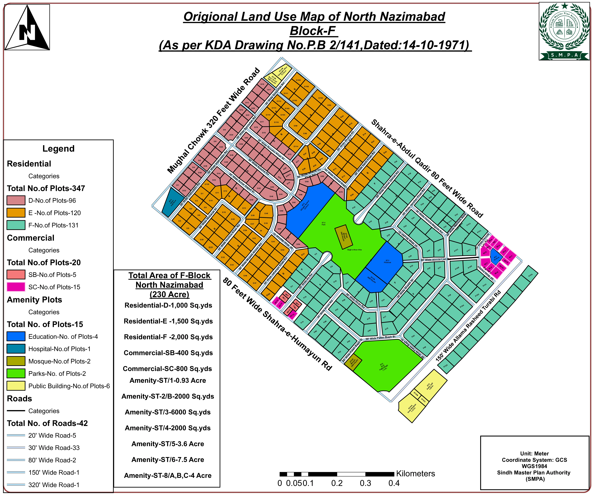
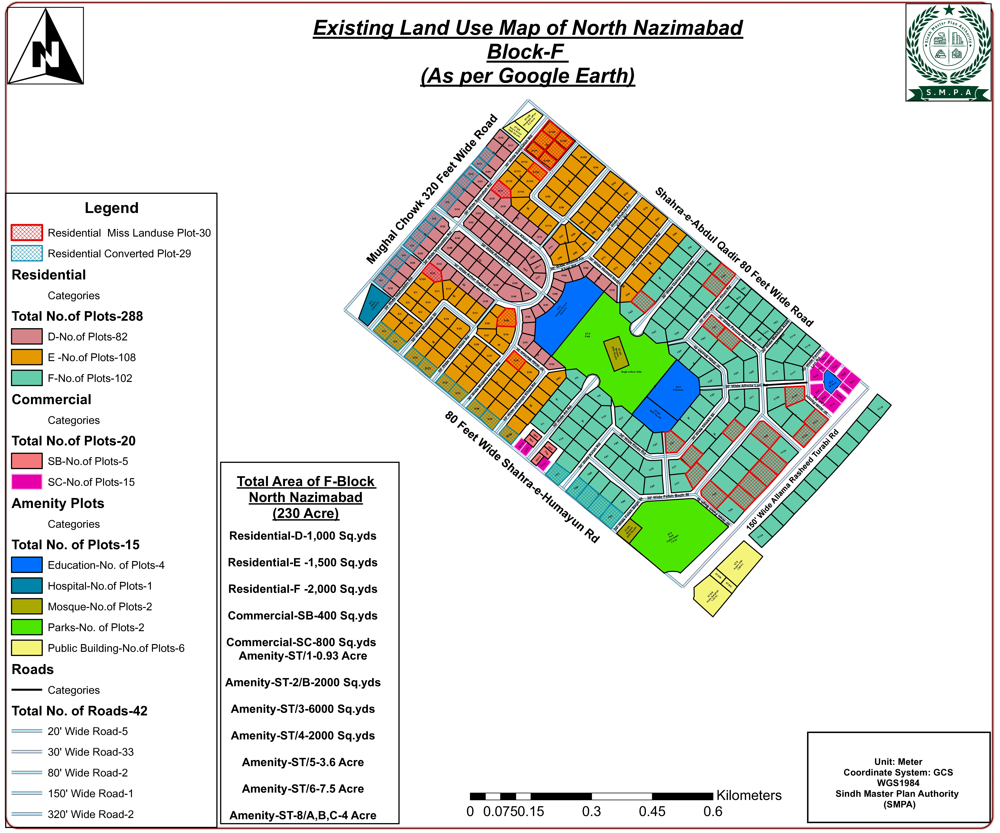

Sindh Local Government Minister Syed Nasir Hussain Shah visits the Sindh Master Plan Authority, inaugurates advanced GIS technology and conducts Hajj balloting for officers and employees.
Karachi: Sindh Minister for Local Government, Syed Nasir Hussain Shah, visited the Sindh Master Plan Authority, where he formally inaugurated the Authority’s newly introduced advanced GIS (Geographic Information System) Technology.
The modern GIS system will play a key role in smart city planning and land management at the Sindh Master Plan Authority.
During the visit, the Minister was given a live demonstration of the technology. The system will assist in the preparation of smart city plans and facilitate the identification of plots belonging to Sindh’s land management institutions. It will also enable the development of smart city plans through the use of Google imagery.
On the occasion, a balloting ceremony for Hajj 2027 was also held for the officers and employees of the Authority. The ceremony was attended by Additional Chief Secretary Dr Waseem Shamshad, Senior Director Shakeel Siddiqui, DG KDA Asif Jan Siddiqui, along with senior officers of the Sindh Master Plan Authority and the Karachi Development Authority (KDA).
Speaking on the importance of the advanced GIS technology, Syed Nasir Hussain Shah stated that the use of modern technology would enhance transparency, efficiency and effective monitoring in institutional affairs, while also ensuring the delivery of improved and quality public services. He directed the concerned officers to make full use of the new digital system to further strengthen the Authority’s performance.
The digital system will promote transparency, efficiency and effective monitoring.
The Minister further said that, in line with the vision of Chairman Bilawal Bhutto for a developed Pakistan, the Government of Sindh is introducing modern technology across its institutions. He described this initiative as both encouraging and essential to meet the demands of the modern era.
Later, the Minister participated in the Hajj 2027 balloting ceremony for the Authority’s officers and employees. He congratulated the successful candidates and extended his best wishes for a safe and blessed pilgrimage. He added that the Government of Sindh remains committed to the welfare of its employees and that such initiatives help boost their morale.
On the occasion, Senior Director Shakeel Siddiqui presented a commemorative shield to Syed Nasir Hussain Shah. Welcoming the Minister, he thanked the Government of Sindh for introducing the modern system and for its employee welfare initiatives. He also reaffirmed the Authority’s commitment to promoting transparency, good governance and the adoption of modern technology through all possible measures.
GIS in practice: North Nazimabad Block-F
The two land use maps below were produced by the Authority for Block-F, North Nazimabad — 230 acres in all. The first is drawn from the original approved layout (KDA Drawing No. P.B 2/141 dated 14-10-1971); the second records the use found on the ground, read from Google Earth imagery. Together they show what the technology is for: the approved layout carries 347 residential plots, while the existing survey finds 288, alongside 30 plots in mis-land-use and 29 converted plots.


Photo Gallery
Directorate of Press Information, Information Department, Government of Sindh, Karachi Phone: 99204401 — issued 29 July 2026 by Muhammad Shabih Siddiqui, Director (Media Management), Minister for Local Government, Housing & Town Planning, Government of Sindh.